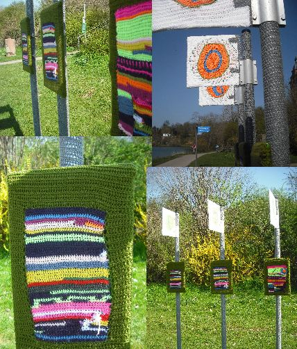

Redaktion kommunal
Auf der Seite von Mapec wurde die neue Ausstellung zum Thema Streetart im Miltenberger Jugendzentrum ausführlich dokumentiert, weshalb wir der Einfachheit halber darauf verweisen.
Redaktion kommunal
Auf der Seite von Mapec wurde die neue Ausstellung zum Thema Streetart im Miltenberger Jugendzentrum ausführlich dokumentiert, weshalb wir der Einfachheit halber darauf verweisen.
Sebastian Schalk

Man mag es nicht für möglich halten, doch sogar im tristen Miltenberg stolpert man hin und wieder über etwas, das zum Rätseln anregt – und damit sind in diesem Fall nicht die menschlichen Abgründe gemeint. Über die Kreide-Schriftzüge, die vor einigen Tagen aufgetaucht sind, möchte ich deshalb an dieser Stelle keine Spekulationen anstellen.
zugesandt von Mapec

mb
Nix los derzeit? Terminhinweise gehen auch keine ein. Da bringe ich halt mal ein Bild von einem netten Graffiti, das beim Miltenberger Stadtfest auf Stellwände (!) gemalt wurde, damit nur ja keine Wand beschmiert wird, wo sich doch angesichts der Örtlichkeit – der Sparkassen-Innenhof – auch anderes Bemalen angeboten hätte.

Und sonst beim Stadtfest? Die Ausstellung der Künstlergruppe FarbMagie war sehr durchwachsen, aber teils wirklich gut. Am Engelplatz gab es Lahmacun und Ayran zu deutscher Blasmusik – also absolut die doppelte Dröhnung, international gestartet und national gelandet – das musst du erstmal aushalten. (Da gibt es verstörende Drogenerlebnisse, die sind deutlich weniger gefährlich.)
Ich habe es überstanden. Allzu oft muss ich das aber nicht haben.
Fotos: Mapec
Angelina „hanaMan“ Klug hat bis zur neuen Ausstellung ab 12. April die Kunsthaltestelle unterhalb des Aschaffenburger Schlosses sehr schön bunt gestaltet.

Nach Blumensamen und Guerilla Gardening jetzt die nächste Aktion auf dem Weg zur Revolte: Graffiti für Anfänger!
Aber kein Grund zur Aufregung. Der Workshop richtet sich an Kinder und Jugendliche ab 12 Jahren und gemalt wird nicht auf Hauswände sondern auf Leinwand. Trotzdem eine gute Sache!
von www.kunstnetz-mil.de:
Zu Beginn des Workshops werden verschiedene Styls von Schriften ausprobiert und als Skizze zu Papier gebracht. Anschließend wird der Entwurf von den Teilnehmern auf eine große Leinwand übertragen, um ihn dann im typischen Graffiti-Stil farbig zu gestalten. Nach Abschluss des Workshops werden die entstandenen Werke der Teilnehmer ausgestellt. Nach Ausstellungsende werden die Werke an Euch übergeben.
Alter: ab ca. 12 Jahre
Termin: Samstag, 29.03.2014, 10 – 16 Uhr
Wo: Miltenberg, Schirmerstraße 12, Klangfabrik
Mitzubringen: 1 schwarzer Fineliner, 1 Bleistift, Radiergummi, geeignete Kleidung
Kosten: Kursgebühr 20 €, Materialkosten 12 €
Anmeldeschluss: 27. März
Schriftliche Anmeldung über das KUNSTNETZ
Infos unter: 09371/501-506
Manche Eimer haben es in sich. Der hier hat es auf sich. Dem haben viele Menschen eine geklebt.

Gibt es das? Streetart Indoor? Wenn nicht, dann müsste hierfür ein neuer Begriff gefunden werden. Oder gibt es den schon? In jedem Fall: Hier kommen vier Fotos, aufgenommen in Miltenberg.
gesehen in Miltenberg
Bild aus blu.blogsport.de
Bild aus blu.blogsport.de
Bild aus blu.blogsport.de
Bild aus blu.blogsport.de
Aus dem letzten Eintrag im Blog blu.blogsport.de (14.02.12): „Obwohl ich jetzt erst wieder angefangen habe gibt es wieder eine Änderung. Hier werde ich keine Bilder mehr von Streetart-Aktionen posten (und etwas anderes hatte ich eigentlich nicht mehr vor) sondern die wandern in Zukunft alle direkt auf KOMMUNAL.TK
Also wenn ihr was veröffentlichen wollt einfach an kommunal[at]gmx.net wenden.“
Wir bedanken uns! Da hat jemand unseren Aufruf (Call for Papers) sehr gut verstanden.

Bild aus blu.blogsport.de